La vidéo de *Pursuing AI* explore les capacités révolutionnaires du modèle d'intelligence artificielle **Claude Opus 5** appliquées à la création et au développement de jeux vidéo. À travers plusieurs démonstrations de pointe, la vidéo met en lumière le passage d'une simple assistance au codage à une génération autonome de systèmes graphiques complexes, de jeux de stratégie en temps réel et de démos interactives par navigateur (comme le projet *Snowflow*). Le créateur décortique la méthode de « boucle de gantelet » (*gauntlet loop*), où l'IA emploie des sous-agents pour évaluer en continu son propre travail, comparer les résultats à des références existantes, corriger visuellement les bugs via l'analyse de captures d'écran et itérer jusqu'à obtenir un niveau de qualité prêt pour la production.
Au-delà des performances techniques ahurissantes — telles que la génération de jeux 3D complexes via 3.js, BabylonJS et des shaders WGSL personnalisés en quelques heures pour un coût de calcul mesuré en millions de jetons —, le rapport alerte sur la prolifération de fausses démos virales sur les réseaux sociaux. La méthode d'analyse du créateur repose sur un scepticisme rigoureux : exiger des preuves tangibles telles que des dépôts GitHub, du code source ouvert, des journaux de développement et des versions jouables. Pour les créateurs de contenu et les développeurs, l'enseignement majeur réside dans la compréhension des limites actuelles et des réelles opportunités de ces flux de travail agentiques autonomes.
Opus 5 assure un max en ce moment. Les générations que les gens créent sont tellement réalistes que certaines n'ont même plus l'air d'appartenir à l'IA. J'ai parcouru les meilleurs exemples et croyez-moi, vous comprendrez pourquoi tout le monde parle de ce modèle. C'est Pursuing AI et vous regardez le rapport de recherche.
Interface & Outils : Interface de type jeu vidéo avec affichage de débogage (Debug HUD) et interface de jeu de stratégie spatiale en temps réel.
Contenu textuel & Code : Texte affiché : "OPUS 5", "OBJECTIVE: Reach the Starship, Board the Starship", "DEBUG HUD", "build: UE5.4 dev", statistiques de performance (FPS, VRAM, RAM, Nanite tris).
Action / Démonstration : Démonstration de rendus visuels ultra-réalistes générés par intelligence artificielle, présentés sous forme de fausses séquences de jeu vidéo et d'interfaces tactiques.
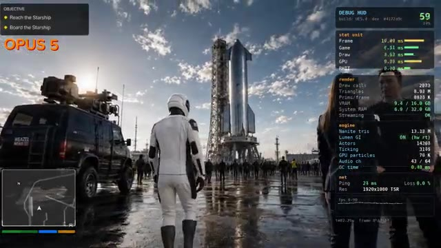
🔍 AgrandirEn commençant par cette démonstration de conduite tout-terrain, Chris a demandé à Opus 5 de générer les plus beaux graphismes de jeu possibles, et tout ce que vous voyez ici a été créé par le modèle lui-même. À première vue, il est difficile de croire que cela a été généré par IA. L'éclairage, le terrain, la végétation et l'environnement global ont l'air étonnamment soignés.
Interface & Outils : Interface de la plateforme X (Twitter) affichant un tweet avec une vidéo intégrée, ainsi qu'une barre latérale à droite montrant les suggestions de profils à suivre et les tendances actuelles.
Contenu textuel & Code : Texte du tweet de Chris : "I asked Claude 5 Opus to generate me the best game graphics it could! I wanted to create a car on a dirt trail demo and see how good it was at crafting car graphics without any textures. Everything you see here is 100% crafted from the model itself." Le profil de Chris (@ChrisGPT) est également visible avec la mention "Agi 2029 - AI Insider / Reporter as featured in The Information - NYT - Techcrunch".
Action / Démonstration : Affichage d'un post sur les réseaux sociaux présentant une vidéo de gameplay générée par intelligence artificielle, démontrant les capacités graphiques d'un modèle d'IA pour la création de jeux vidéo.
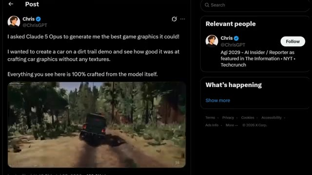
🔍 Agrandir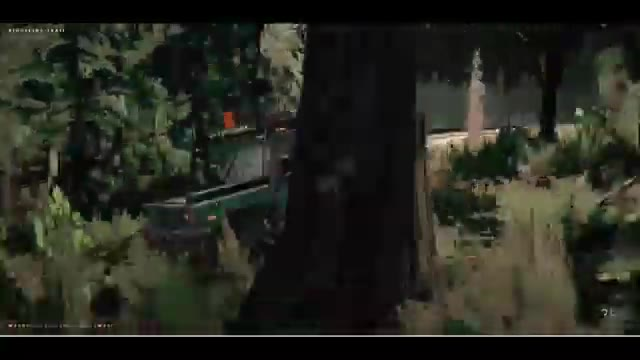
🔍 AgrandirBien sûr, ce n'est pas parfait, il y a encore des artéfacts visuels et des limitations de gameplay, mais la qualité visuelle globale est vraiment impressionnante. Chris lui a alors donné un tout dernier prompt : augmenter la qualité. Et les résultats ont complètement changé la scène. Il a même dit : Nous avons atteint le point d'inflexion où l'IA peut produire des ressources de qualité indépendante pour les jeux vidéo.
Interface & Outils : Interface de la plateforme X (Twitter) affichant un tweet de ChrisGPT et le panneau latéral des tendances.
Contenu textuel & Code : Texte du tweet de ChrisGPT : "Claude Opus 5, I think we've reached the inflection point where AI can produce indie quality assets for video games. This is after my second prompt, just simply telling it to increase the quality. Some of these angles on the car are truly stunning and I can 100% say they look better than a lot of Indie games I've recently played."
Action / Démonstration : L'écran affiche d'abord les images en mouvement d'une démo de jeu vidéo générée par IA, puis passe à une capture d'un post sur les réseaux sociaux commentant cette réalisation.
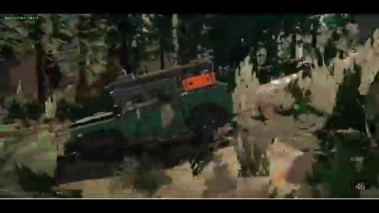
🔍 Agrandir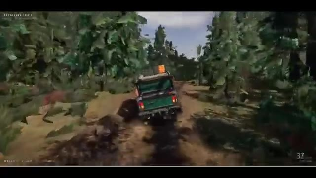
🔍 Agrandir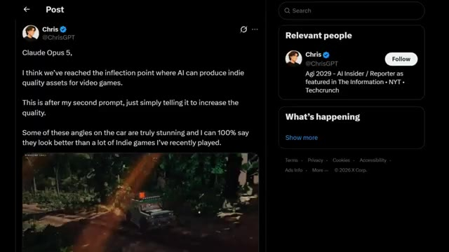
🔍 AgrandirEn regardant la version améliorée, il est facile de comprendre pourquoi. Les reflets sur la carrosserie de la voiture, la lumière du soleil frappant la peinture et les détails de l'environnement ont l'air beaucoup plus raffinés. Dans certains plans, je dirais sincèrement que les visuels rivalisent avec de nombreux jeux indépendants disponibles aujourd'hui. Ce qui m'a encore plus impressionné, ce sont les petits détails.
Interface & Outils : Capture d'écran de gameplay montrant un environnement virtuel interactif de type jeu vidéo avec des éléments d'interface (HUD, titre "RIDGELINE TRAIL").
Contenu textuel & Code : Texte affiché en haut à gauche : "RIDGELINE TRAIL", ainsi que des indicateurs de vitesse ou de performance en bas de l'écran.
Action / Démonstration : Démonstration visuelle d'un véhicule en mouvement à travers différents angles de caméra (extérieur et intérieur) pour mettre en valeur les graphismes, l'éclairage et les détails de l'environnement.
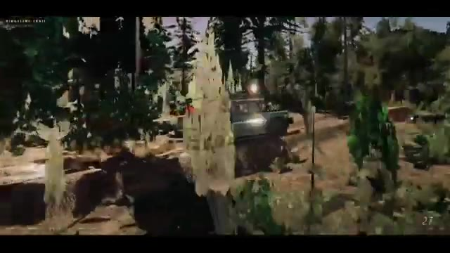
🔍 Agrandir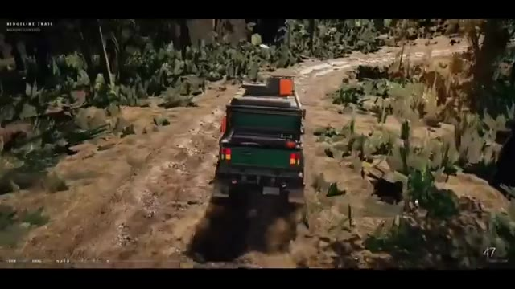
🔍 Agrandir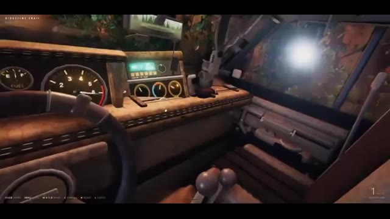
🔍 AgrandirLa suspension réagit à mesure que la voiture roule sur un terrain accidenté. Les pneus soulèvent du sable, l'odomètre est fonctionnel, et l'environnement semble beaucoup plus vivant que ce à quoi on s'attendrait d'un contenu généré par l'IA. Ça ne remplace toujours pas le développement de jeux AAA, mais c'est un signe évident de la rapidité avec laquelle l'IA s'améliore.
Interface & Outils : Démonstration vidéo d'un contenu généré par IA ou d'un moteur de jeu interactif style "Ridgeline Trail" avec des éléments d'interface utilisateur en surimpression (commandes de touches, odomètre/compteur).
Contenu textuel & Code : Texte affiché "RIDGELINE TRAIL", commandes de jeu en bas à gauche (Click, Drag, WASD, etc.), et compteur de vitesse/odomètre fonctionnel en bas à droite.
Action / Démonstration : Un véhicule tout-terrain vert roule sur un terrain accidenté, simulant dynamiquement la physique des suspensions et la projection de sable/poussière par les pneus.
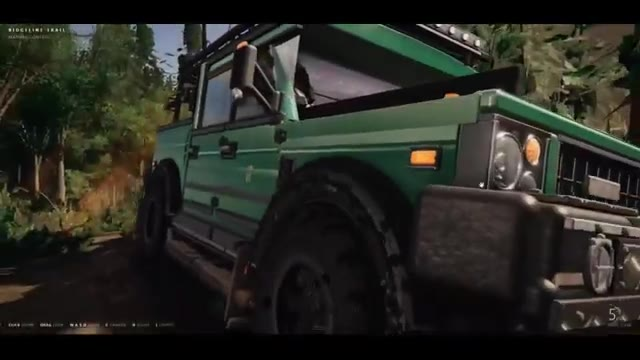
🔍 Agrandir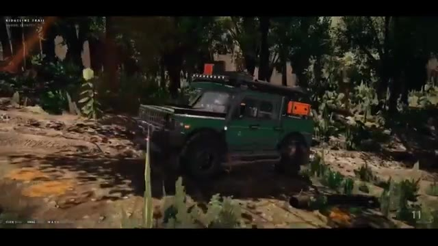
🔍 Agrandir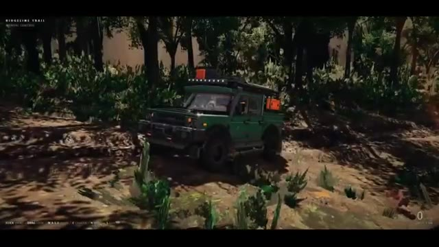
🔍 AgrandirSi c'est ce qu'Opus 5 peut générer aujourd'hui, imaginez où en seront ces outils d'ici un an. À ce rythme, nous obtiendrons honnêtement GTA 7 fait avec l'IA avant que Rockstar ne sorte officiellement GTA 6. Avant de continuer, je veux rapidement vous montrer un moyen d'économiser de l'argent sur les abonnements IA.
Interface & Outils : Navigateur web affichant une publication sur le réseau social X (anciennement Twitter) et une page de tarification officielle de ChatGPT.
Contenu textuel & Code : Publication de ChrisGPT sur X mentionnant "Claude Opus 5" et la génération d'actifs de jeux vidéo de qualité indépendante. Page des tarifs de ChatGPT affichant les formules Free ($0), Go ($8), Plus ($20) et Pro ($100/mois) avec leurs caractéristiques respectives.
Action / Démonstration : Présentation visuelle d'un post sur les réseaux sociaux illustrant la génération par IA, suivie d'une démonstration de la page de tarification des abonnements IA.
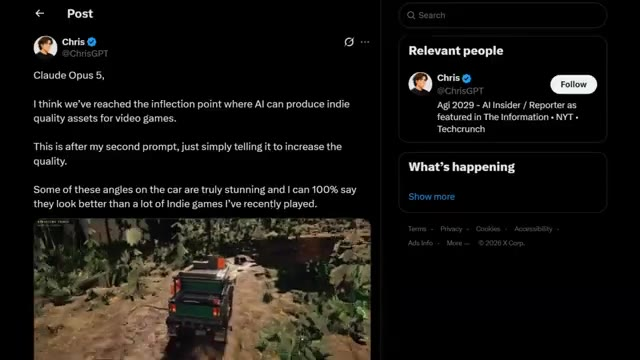
🔍 Agrandir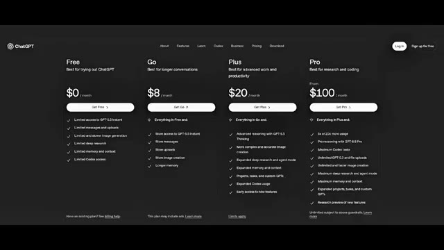
🔍 AgrandirSi vous recherchez un abonnement ChatGPT Plus moins cher en 2026, U7Buy vaut vraiment le détour. U7Buy propose un abonnement privé d'un mois à ChatGPT Plus pour environ 9 dollars au lieu du prix officiel de 20 dollars, tout en vous donnant accès à des fonctionnalités puissantes comme GPT 5.6, Image 2.0 et Deep Research.
Interface & Outils : Site web de commerce en ligne U7Buy (page d'achat de comptes ChatGPT Accounts).
Contenu textuel & Code : "ChatGPT Accounts for Sale", "Safe", "Full Warranty", "Plan Type: Plus (Private), Go (Private), Pro (Private), Plus (Shared)", "Duration: 1 Month $9.99, 12 Months $53.50", "ChatGPT Plus Private 1 Month", "Price $9.99", "Buy Now", texte superposé "GPT 5.6" et "IMAGE 2.0".
Action / Démonstration : Navigation et présentation de la page d'achat d'un compte ChatGPT Plus à prix réduit sur le site U7Buy.
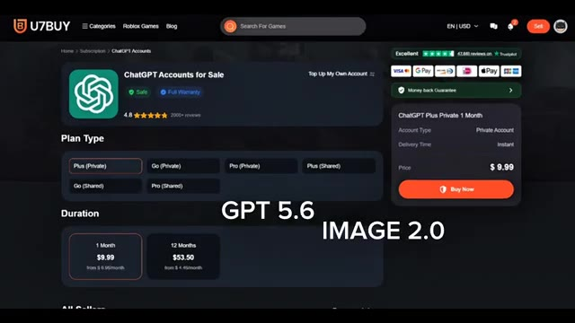
🔍 AgrandirEn plus de ChatGPT+, U7buy propose également des abonnements pour des services tels que Netflix, Gemini et Spotify, ce qui en fait un endroit pratique pour économiser sur plusieurs abonnements. Ils fournissent également un support client 24h/24 et 7j/7 si vous avez besoin d'aide. U7buy fonctionne depuis plus de 10 ans et a obtenu une note de 4,8 étoiles sur Trustpilot avec des milliers d'avis clients.
Interface & Outils : Site web U7buy et plateforme d'avis Trustpilot.
Contenu textuel & Code : Logos et abonnements de services (Crunchyroll, Amazon Prime Video, Gemini, Xbox, Claude, Apple TV, Apple Music, Perplexity AI, Apple One, Spotify), barres de recherche, note globale de 4.8 sur Trustpilot avec 47 172 avis. [DESC_IMAGE_1] Navigation sur la boutique en ligne U7buy présentant les offres d'abonnements multiples. [DESC_IMAGE_2] Affichage de la rubrique d'assistance client 24/7 de U7buy. [DESC_IMAGE_3] Consultation de la note Trustpilot de 4.8 étoiles accumulée au fil de plus de 10 ans d'activité.
Action / Démonstration : Démonstration pédagogique et présentation du workflow.
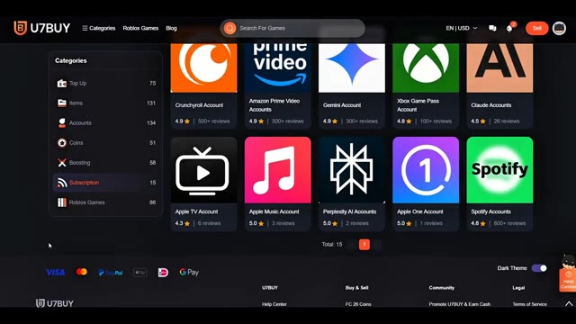
🔍 Agrandir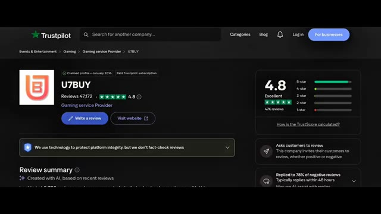
🔍 AgrandirSi vous souhaitez économiser de l'argent sur vos abonnements, consultez mon lien dans la description et utilisez mon code de réduction PURSU pour obtenir 5 % de réduction supplémentaire sur votre commande. Revenons maintenant à la vidéo. Si vous pensiez que le dernier exemple était impressionnant, celui-ci passe à un niveau supérieur. Imaginez donner à Opus 5 un seul prompt détaillé et le regarder construire un tout nouveau jeu de stratégie en temps réel inspiré de Homeworld, entièrement à partir de zéro. Pas d'actifs préfabriqués, pas de modèles 3D existants.
Interface & Outils : Écran promotionnel de code de réduction (U7BUY) suivi d'une interface de réseau social (X/Twitter) et d'une interface de jeu vidéo de stratégie en temps réel (RTS) spatiale.
Contenu textuel & Code : Code promo "PURSU", texte "5% off code", publication X mentionnant "Homeworld Style Space RTS with OPUS 5 (workflow)", métriques de jetons (68.6k input, 4.6m output, $632.65), et interface de jeu affichant les ressources, les unités de flotte, les icônes de vaisseaux et les arbres de recherche.
Action / Démonstration : Présentation d'un code promotionnel de parrainage, puis affichage d'un post sur les réseaux sociaux et d'une démonstration détaillée du jeu de stratégie spatiale généré par Opus 5.
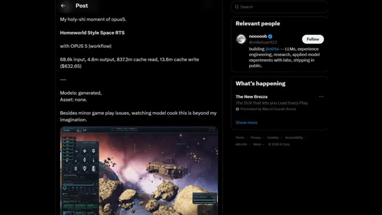
🔍 Agrandir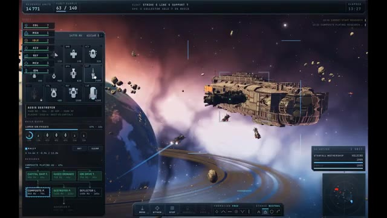
🔍 AgrandirTout ce que vous voyez, depuis les immenses vaisseaux capitaux jusqu'aux planètes, champs d'astéroïdes, contrôles de flotte, objectifs, gestion des ressources et batailles en temps réel, a été généré par Opus 5 en utilisant 3.js. Mais voici la partie vraiment intéressante. Le modèle n'a pas seulement généré du code une fois pour s'arrêter, il a évalué en continu son propre travail, utilisé des sous-agents pour améliorer différentes parties du projet, comparé les résultats avec le jeu original Homeworld, et continué à affiner le jeu jusqu'à atteindre ce niveau de qualité.
Interface & Outils : Interface utilisateur de type jeu de stratégie de science-fiction (style Homeworld) avec des panneaux de ressources, de gestion de flotte, de recherche et une mini-carte radar.
Contenu textuel & Code : Textes visibles : "RESOURCE UNITS 14 688", "FLEET SUPPLY 63 / 140", "AEGIS DESTROYER", "COMPOSITE PLATING", "SELECTION: STARFALL MOTHERSHIP", "CRUCIBLE REFINERY", "FLEET UNDER ATTACK".
Action / Démonstration : Navigation et gestion de jeu de stratégie spatiale en temps réel, avec sélection d'unités, construction de vaisseaux et observation de combats spatiaux.
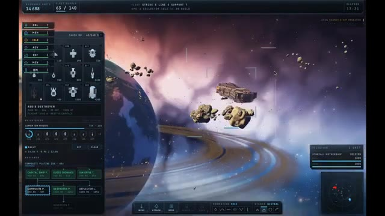
🔍 Agrandir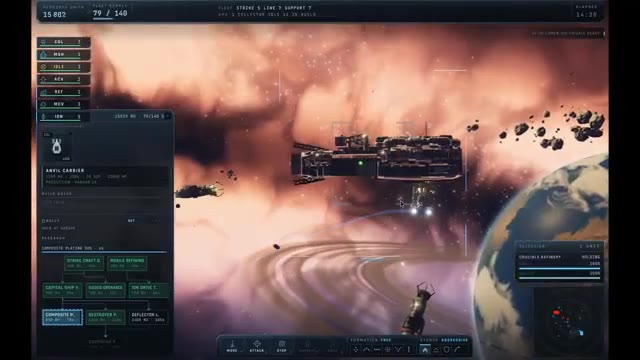
🔍 Agrandir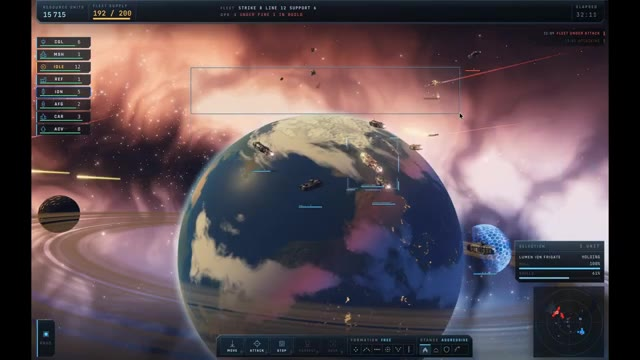
🔍 AgrandirLes chiffres derrière ce projet sont honnêtement fous. Environ 68 000 jetons d'entrée, plus de 4,6 millions de jetons de sortie, et environ 632 $ de coût de calcul pour le terminer. Et le résultat ? Un jeu par navigateur entièrement jouable qui est également open source.
Interface & Outils : Interface du réseau social X (anciennement Twitter) affichant un post avec texte et image intégrée.
Contenu textuel & Code : Texte du post : "My holy-shi moment of opus5. Homeworld Style Space RTS with OPUS 5 (workflow) 68.6k input, 4.6m output, 837.2m cache read, 13.6m cache write ($632.65). Models: generated, Asset: none. Besides minor game play issues, watching model cook this is beyond my imagination." Capture d'écran d'un jeu de stratégie en temps réel (RTS) spatial avec des vaisseaux dans un décor nébuleux. Panneau latéral droit affichant les sections "Relevant people" et "What's happening".
Action / Démonstration : Affichage à l'écran d'une publication sur les réseaux sociaux illustrant les statistiques et le rendu du projet discuté dans la vidéo.
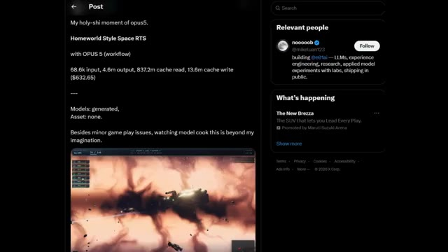
🔍 AgrandirEt juste au moment où vous pensez qu'Opus 5 ne pouvait pas être plus impressionnant, voici un autre exemple. Ce développeur a associé Claude Code à Opus 5 et lui a donné un seul objectif. À partir de là, l'IA a presque tout géré. Après environ 9 heures et près de 4 millions de jetons, elle a construit Snowflow, une démo graphique basée sur un navigateur qui est honnêtement difficile à croire comme étant principalement créée par une IA.
Interface & Outils : Navigateur web affichant un tweet (interface de type X/Twitter).
Contenu textuel & Code : Texte du tweet : "Someone used Claude Code with Opus 5 to build SNOWFLOW, a browser WebGPU snow and waterbending demo with persistent terrain deformation in 9 hours. - Full-Stack Graphics Pipeline... - Interactive Terrain Deformation... - Visual Self-Correction... - 9-Hour Build Window..." ainsi qu'une vidéo intégrée montrant le rendu enneigé. Dans le panneau de droite, des sections "Relevant people" avec le compte d'0xMarioNawfal et "What's happening".
Action / Démonstration : Affichage d'une publication sur les réseaux sociaux détaillant les caractéristiques techniques d'une démo graphique créée par une IA.
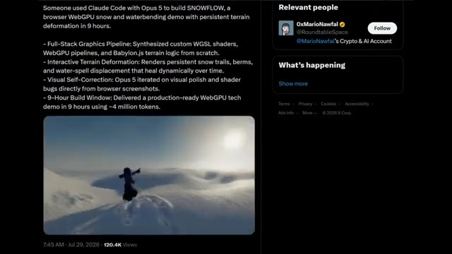
🔍 AgrandirLe projet comprend des shaders WGSL personnalisés, un pipeline de rendu WebPG complet, un système de terrain BabylonJS, de la neige interactive qui réagit à vos sorts, des traces de neige persistantes, un déplacement d'eau réaliste et même un terrain qui se restitue lentement de lui-même au fil du temps.
Interface & Outils : Navigateur web affichant une publication sur la plateforme X (anciennement Twitter).
Contenu textuel & Code : Texte du tweet : "Someone used Claude Code with Opus 5 to build SNOWFLOW, a browser WebGPU snow and waterbending demo with persistent terrain deformation in 9 hours." Suivi de points clés techniques incluant "Full-Stack Graphics Pipeline", "Interactive Terrain Deformation", "Visual Self-Correction", et "9-Hour Build Window", avec une vidéo intégrée montrant un personnage dans un paysage enneigé.
Action / Démonstration : Affichage d'une publication sur les réseaux sociaux détaillant la création d'une démo WebGPU interactive à l'aide de Claude Code et Opus 5.
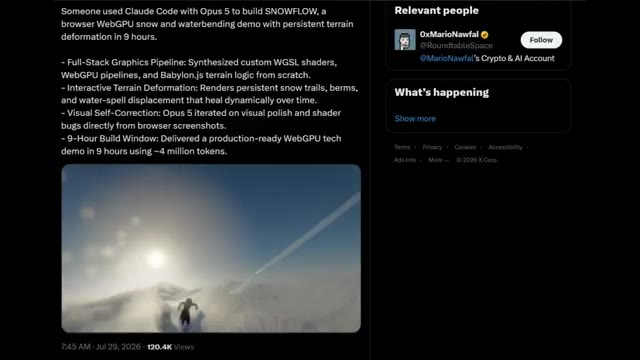
🔍 AgrandirMais la partie la plus folle, c'est que Opus 5 n'a pas seulement généré le projet, il a réellement examiné des captures d'écran de son propre travail, trouvé des bugs visuels et les a corrigés automatiquement. Maintenant, jetez un œil à ce gameplay. Vous pouvez parcourir le monde, lancer des sorts d'eau, tailler des chemins à travers la neige, et chaque interaction modifie l'environnement en temps réel.
Interface & Outils : Interface d'une application de réseau social (X / Twitter) montrant un post explicatif et des extraits vidéo, suivie d'un moteur de rendu graphique 3D WebGPU.
Contenu textuel & Code : Texte du post X : "Someone used Claude Code with Opus 5 to build SNOWFLOW, a browser WebGPU snow and waterbending demo with persistent terrain deformation in 9 hours." avec les points techniques : Full-Stack Graphics Pipeline, Interactive Terrain Deformation, Visual Self-Correction, 9-Hour Build Window.
Action / Démonstration : Le créateur montre une publication détaillant le projet Snowflow, puis présente des séquences de gameplay interactives où le personnage se déplace et interagit dynamiquement avec le décor enneigé.
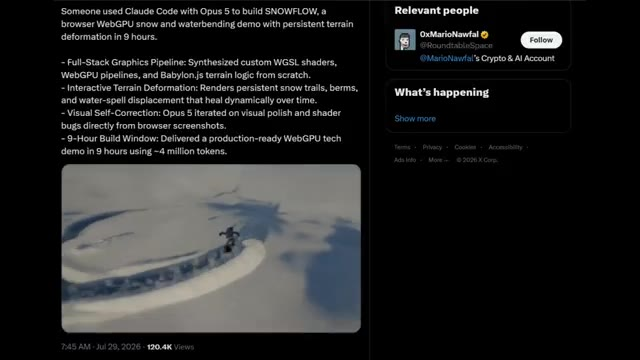
🔍 AgrandirL'éclairage, les effets de particules, les reflets et la déformation du terrain ont l'air incroyablement soignés. C'est l'une des démonstrations les plus fortes de ce dont Opus 5 est capable aujourd'hui. Ce n'est plus seulement une IA qui écrit du code, elle peut construire des systèmes graphiques avancés, les déboguer visuellement et itérer jusqu'à ce que le résultat final semble prêt pour la production.
Interface & Outils : Système de rendu graphique 3D interactif généré par Opus 5.
Contenu textuel & Code : Environnement virtuel 3D photoréaliste enneigé, incluant un personnage animé, des effets de traînée et de particules dans la neige, un soleil éclatant avec reflets atmosphériques et des formations de glace.
Action / Démonstration : Le personnage évolue dynamiquement à travers le décor enneigé, provoquant des déformations physiques réalistes du terrain et interagissant avec les effets de particules.
Si c'est ce que l'IA peut créer en moins d'un jour aujourd'hui, imaginez à quoi le développement de jeux, la création et les simulations pourraient ressembler au cours des prochaines années. Le rythme des progrès est franchement incroyable. Une chose rapide avant de conclure. Ne croyez pas chaque démo virale d'Opus 5 que vous voyez sur X. Par exemple, cette publication affirme qu'Opus 5 a généré un jeu 3D de style GTA réaliste dans un navigateur, situé sur un site de lancement de SpaceX Starship, en utilisant un seul prompt et la boucle de gant (gauntlet loop) où des agents IA construisent, critiquent et améliorent à plusieurs reprises le projet.
Interface & Outils : Interface du réseau social X (anciennement Twitter) affichant un tweet et un profil utilisateur.
Contenu textuel & Code : Texte du tweet de l'utilisateur @MarlburroW38 mentionnant : "GTA SpaceX running in the browser 👀, built by Claude in one prompt using a Gauntlet Loop." et détaillant la pile technique (Stack: three.js + WebGPU, etc.).
Action / Démonstration : Le créateur illustre ses propos en affichant des exemples de rendus visuels générés par IA puis une publication sur les réseaux sociaux pour mettre en garde contre les fausses démos virales.
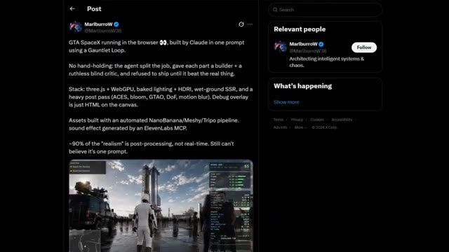
🔍 AgrandirÇa a l'air impressionnant, mais cet exemple est presque certainement faux. Voici pourquoi. Le gameplay lui-même montre de multiples signes qu'il n'a pas été généré de zéro par un agent de codage IA. Les animations, le mouvement de caméra, le comportement des PNJ, l'éclairage et la cohérence globale de la scène ressemblent beaucoup plus à un jeu existant lourdement modifié qu'à un projet de navigateur créé en un seul prompt.
Interface & Outils : Navigateur web (plateforme X/Twitter) et moteur de jeu (Unreal Engine 5 avec HUD de débogage et mini-carte style GTA).
Contenu textuel & Code : Publication textuelle : "GTA SpaceX running in the browser, built by Claude in one prompt using a Gauntlet Loop..." avec spécifications techniques (three.js + WebGPU, baked lighting + HDRI, wet-ground SSR...). Interface de jeu avec les objectifs "Reach the Starship", "Board the Starship" et des statistiques de performance (FPS, mémoire, triangles).
Action / Démonstration : Le créateur montre d'abord un post X détaillant un prétendu jeu généré par IA, puis diffuse des images de gameplay en vue à la troisième personne avec un personnage en combinaison blanche évoluant dans un décor sophistiqué.
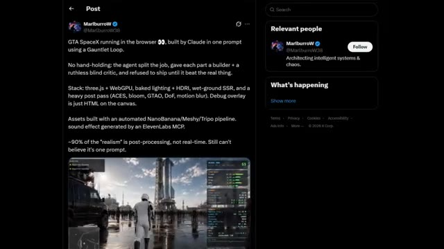
🔍 Agrandir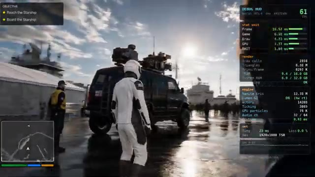
🔍 Agrandir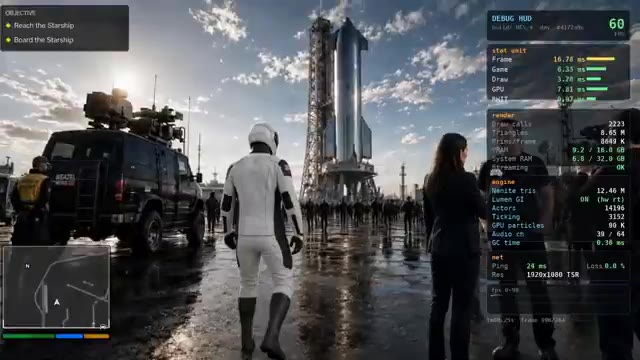
🔍 Agrandir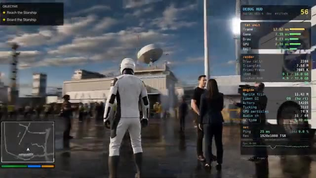
🔍 AgrandirDeuxièmement, il n'y a pas de code source, pas de journaux de développement, pas de démo jouable et aucune preuve technique pour étayer une affirmation aussi extraordinaire. Pour des projets aussi avancés, les développeurs publient normalement un dépôt GitHub, une version pour navigateur, ou expliquent au moins comment ils l'ont construit. Rien de tout cela n'existe ici. Et bien que la boucle de gantelet soit une réelle technique de prompting qui améliore le code généré par l'IA en utilisant des agents constructeurs et critiques, elle ne génère pas magiquement un jeu de qualité GTA à partir d'une seule invite sans aucune preuve.
Interface & Outils : Navigateur web affichant des publications sur le réseau social X (Twitter) ainsi qu'une capture d'écran de jeu vidéo dotée d'un HUD de débogage.
Contenu textuel & Code : Texte du tweet de MarlburroW : "GTA SpaceX running in the browser 👀, built by Claude in one prompt using a Gauntlet Loop... Stack: three.js + WebGPU...". Texte du tweet de Matt Schumer : "Claude Opus 5 one-shotted this game. EVERYTHING you see in this demo is custom code...". Affichage des métriques de performance sur l'écran du jeu (FPS, frame time, triangles, mémoire VRAM).
Action / Démonstration : Le créateur montre des exemples de publications virales sur X affirmant la génération de jeux vidéo par IA pour appuyer son argumentation sur l'absence de preuves techniques.
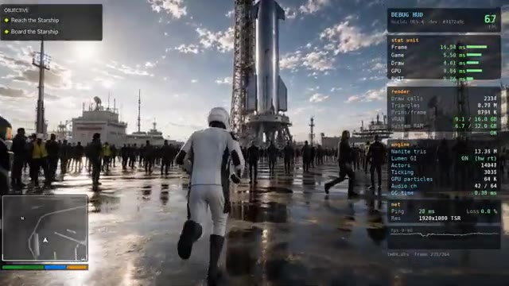
🔍 Agrandir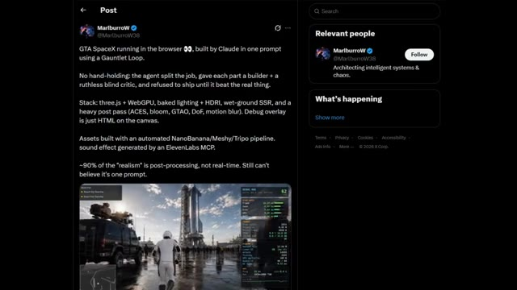
🔍 Agrandir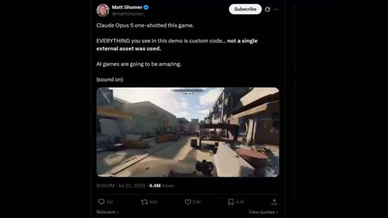
🔍 AgrandirDonc, chaque fois que vous voyez des présentations virales d'Opus 5, cherchez toujours des preuves : code source, démo jouable, documentation technique ou processus de développement transparent. Les vrais exemples d'Opus 5 que nous avons examinés aujourd'hui sont déjà incroyables. Nous n'avons pas besoin de fausses démos pour apprécier la rapidité avec laquelle l'intelligence artificielle progresse. Et c'est tout pour le rapport de recherche d'aujourd'hui.
Interface & Outils : Navigateur web affichant une publication sur les réseaux sociaux (X/Twitter) et lecteur vidéo illustrant des démos techniques.
Contenu textuel & Code : Texte du tweet : "GTA SpaceX running in the browser 👀, built by Claude in one prompt using a Gauntlet Loop. No hand-holding: the agent split the job..." et détails de la pile (three.js + WebGPU, baked lighting, etc.).
Action / Démonstration : Présentation d'exemples concrets de code généré par IA et de démonstrations visuelles à l'écran pour illustrer les propos sur la vérification des sources.
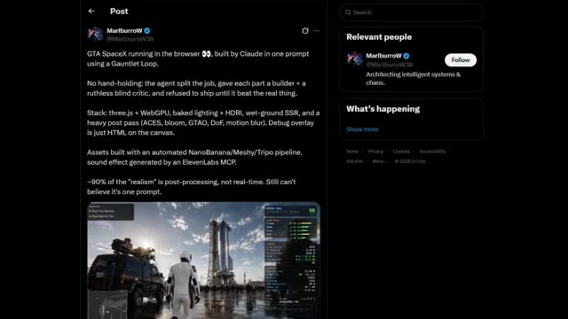
🔍 Agrandir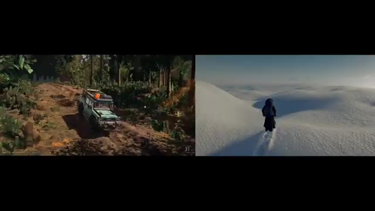
🔍 Agrandir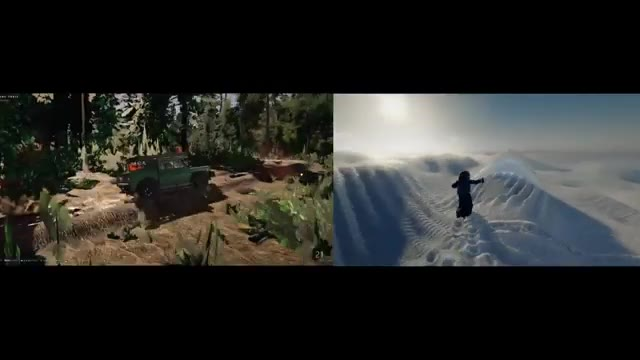
🔍 AgrandirOpus 5 repousse clairement les limites de ce qui est possible avec l'IA. Qu'il s'agisse de générer des environnements de jeu réalistes, de construire des jeux par navigateur complets ou même de déboguer son propre travail, il devient évident que l'IA n'aide plus seulement les développeurs. Elle commence à en devenir un. En même temps, il est important de séparer les réelles avancées des faux posts viraux. C'est exactement ce que je continuerai à faire sur cette chaîne. Trouver les développements d'IA les plus impressionnants, tester les affirmations et vous montrer ce qui est réellement vrai. Si vous avez apprécié ce rapport de recherche, n'oubliez pas de laisser un pouce bleu et de vous abonner à Pursuing AI car je couvrirai chaque
Interface & Outils : Écran partagé présentant des environnements de jeux vidéo générés ou rendus par intelligence artificielle.
Contenu textuel & Code : Éléments visuels de jeux vidéo (véhicule, tableau de bord, paysages enneigés), logo circulaire « PAI » avec un cerveau robotisé et le texte « The Research Report », ainsi que des boutons de likes et d'abonnement.
Action / Démonstration : Affichage d'environnements de jeux vidéo dynamiques générés par IA pour illustrer les capacités d'Opus 5.
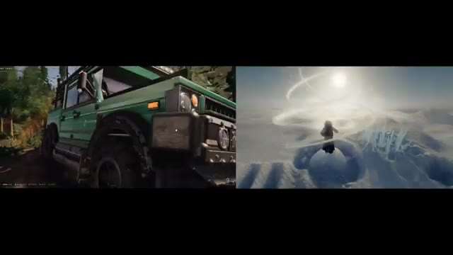
🔍 Agrandir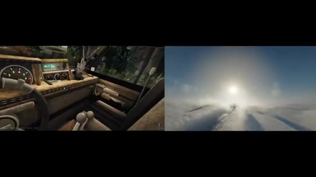
🔍 Agrandir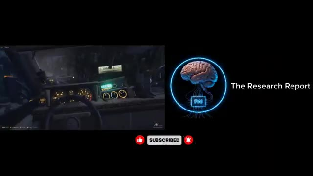
🔍 Agrandirmajeure percée en IA au moment même où elle se produit. Merci d'avoir regardé et je vous vois dans le prochain rapport de recherche.
Interface & Outils : Présentation sans interface logicielle active.
Contenu textuel & Code : Animation graphique illustrant un cerveau stylisé.
Action / Démonstration : Affichage d'un visuel de transition sur fond noir.